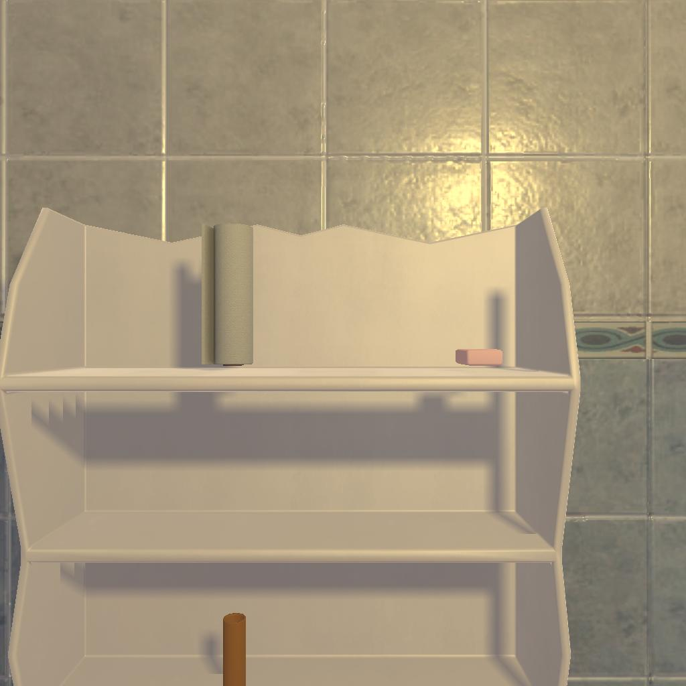

---------------------------------------------------------task: 25---------------------------------------------------------
--------------------------------------------------------------------------------------------------------------------------------------------------------------------
--------------------------------------------------------------------------------------------------------------------------------------------------------------------
Step:--------------------------------------------------------------------------5-------------------------------------------------------------------------------
----------------------------------------
VLM Prompt:
**Task**
Please perform as an embodied AI agent. Our final objective is to find two dishsponge and put them in cart. Below is the plan for completing the task, the current observation, alongside historical data and admissible actions for the next step. Please determine the best action for the next step!
**Plan**
Below is a detailed step-by-step plan to complete the task.
1. Find a dish sponge.
2. Pick up the dish sponge.
3. Find a cart.
4. Place the picked-up dish sponge in the cart.
5. Find another dish sponge.
6. Pick up the dish sponge.
7. Return to the previously located cart.
8. Place the second picked-up dish sponge in the cart with the first one.
**Current Observation**
Displayed is an image capturing the current position of the agent.
Objects in The Image: ['bathroom tiles', 'shower shelf', 'toilet paper roll', 'soap']
**History Information**
Displayed are the previous observations with their corresponding actions.
State 0:
No history.
State 1:
1. Step Index in the Plan: 1
2. Objects: Towel Ring, Mirror, Bathroom Tiles, Sink, Faucet, Soap Dispenser, Bathtub, Shower Head, Toilet, Towel Rack, Bathroom Floor
3. Action: go to shelf 3
State 2:
1. Step Index in the Plan: Unknown
2. Objects: Toilet Paper Roll, Bar of Soap, Shelf 3
3. Action: go to shelf 2
State 3:
1. Step Index in the Plan: 1
2. Objects: Shower Shelf, Soap, Bottles
3. Action: go to cart 1
State 4:
2. Step Index in the Plan: Next step after placing the first dish sponge in the cart
3. Objects: Towel Rack, Towel, Tiled Wall
4. Action: go to shelf 1
State 5:
1. Step Index in the Plan: 1
2. Objects: Shelf, Toilet Paper Roll, Soap
3. Action: go to shelf 4
**Admissible Actions**
(1): go to bathtub 1
(2): go to bathtubbasin 1
(3): go to toilet 1
(4): go to garbagecan 1
(5): go to toiletpaperhanger 1
(6): go to shelf 2
(7): go to shelf 3
(8): go to sink 1
(9): go to sinkbasin 1
(10): go to handtowelholder 1
(11): take papertowelroll 1 from shelf 4
(12): take toiletpaper 1 from shelf 4
(13): take soapbar 1 from shelf 4
**Analysis Guideline**
1. Analyze the history and current observation, and then determine our current step in the plan and our current place.
2. List all visible objects related to the task in the current observation, without summarizing any as "various items."
3. Analyze the objects in the current observation based on the history and the requirements for the current step, and then determine if we can complete the step with the current observation.
4. Analyze and decide on the most appropriate action to take.
5. Summarize the analysis using the following format: "Analysis: [The summarization of the analysis], The Most Appropriate Action: (i which is the integer.): [Selected action]"
**Notes**
1. We must complete each step of the plan in order and cannot skip steps when the previous ones are not finished.
2. For "Go to" actions listed as "go to xxx [n]", interpret this as there are n distinct actions available: "go to xxx 1", "go to xxx 2", ..., "go to xxx n". Select one specific action from these options instead of using "go to xxx [n]".
3. If receptacles such as drawers, cabinets, and so forth are closed in the current observation, we may try to open them.
4. Pay attention to synonyms and ensure clarity in the terms used.
5. We must determine and provide the single action which must be in the **Admissible Actions**.
6. If there is no history available, we are at the first step and the current place is "Unknown".
**Answer**
Please select the most suitable action by following the **Analysis Guideline**, keeping the above **Notes** in mind.
----------------------------------------
----------------------------------------
VLM Response:
Analysis: Based on the current observation and the historical data, the agent appears to be at step 1 of the plan, which is to find a dish sponge. The objects currently visible in the image are bathroom tiles, a shower shelf, a toilet paper roll, and a bar of soap. None of these objects is a dish sponge. Given this information and the plan, the agent has not yet completed step 1 of the plan and cannot proceed to step 2. The current observation does not allow the agent to complete step 1 as the required object (a dish sponge) is not present. Therefore, the agent must continue to search for the dish sponge. Among the admissible actions, none directly suggest the presence of a dish sponge, but the agent can move to another location in the bathroom where the dish sponge might be found. Since the agent has already been to shelves 2, 3, and 4 without finding a dish sponge, it would be reasonable to explore a new location. The agent has not yet checked the bathtub, which could potentially hold a dish sponge.
The Most Appropriate Action: (1): go to bathtub 1
----------------------------------------
----------------------------------------
>>> Refine VLM Response and Get Pure Action: go to bathtub 1
----------------------------------------
-----------------------------------------------------------------
Running time: 10.913120031356812 seconds
Total Money: 0
-----------------------------------------------------------------
-----------------------------------------------------------------
Summarization Prompt:
**Context**
Analysis: Since there is no history information, we are at the first step in the plan, which is to find a statue. The current place is unknown. In the current observation, we see a floorlamp next to an armchair with a small table that has a small object on it, which could potentially be the statue we are looking for. Since the plan requires us to find a statue first and it appears there might be one on the table next to the armchair, we should investigate this object to determine if it is the statue we need.
The Most Appropriate Action: (1): go to armchair 1
**Summary**
1. Step Index in the Plan: 1
2. Objects: Floorlamp, Armchair, Small Table, Small Object (potential statue)
3. Action: go to armchair 1
**Context**
Analysis: Based on the current observation and the historical data, the agent appears to be at step 1 of the plan, which is to find a dish sponge. The objects currently visible in the image are bathroom tiles, a shower shelf, a toilet paper roll, and a bar of soap. None of these objects is a dish sponge. Given this information and the plan, the agent has not yet completed step 1 of the plan and cannot proceed to step 2. The current observation does not allow the agent to complete step 1 as the required object (a dish sponge) is not present. Therefore, the agent must continue to search for the dish sponge. Among the admissible actions, none directly suggest the presence of a dish sponge, but the agent can move to another location in the bathroom where the dish sponge might be found. Since the agent has already been to shelves 2, 3, and 4 without finding a dish sponge, it would be reasonable to explore a new location. The agent has not yet checked the bathtub, which could potentially hold a dish sponge.
The Most Appropriate Action: (1): go to bathtub 1
Please summarize the context by following above examples when providing the summary, and ensure that only the summary is included, without any extra explanation.
**Summary**
-----------------------------------------------------------------
-----------------------------------------------------------------
Summarization Response:
1. Step Index in the Plan: 1
2. Objects: Bathroom Tiles, Shower Shelf, Toilet Paper Roll, Bar of Soap
3. Action: go to bathtub 1
-----------------------------------------------------------------
-----------------------------------------------------------------
Text Observation:You arrive at loc 0. On the bathtub 1, you see a cloth 2, a dishsponge 1, and a soapbottle 1.
-----------------------------------------------------------------
UNSUCCEED